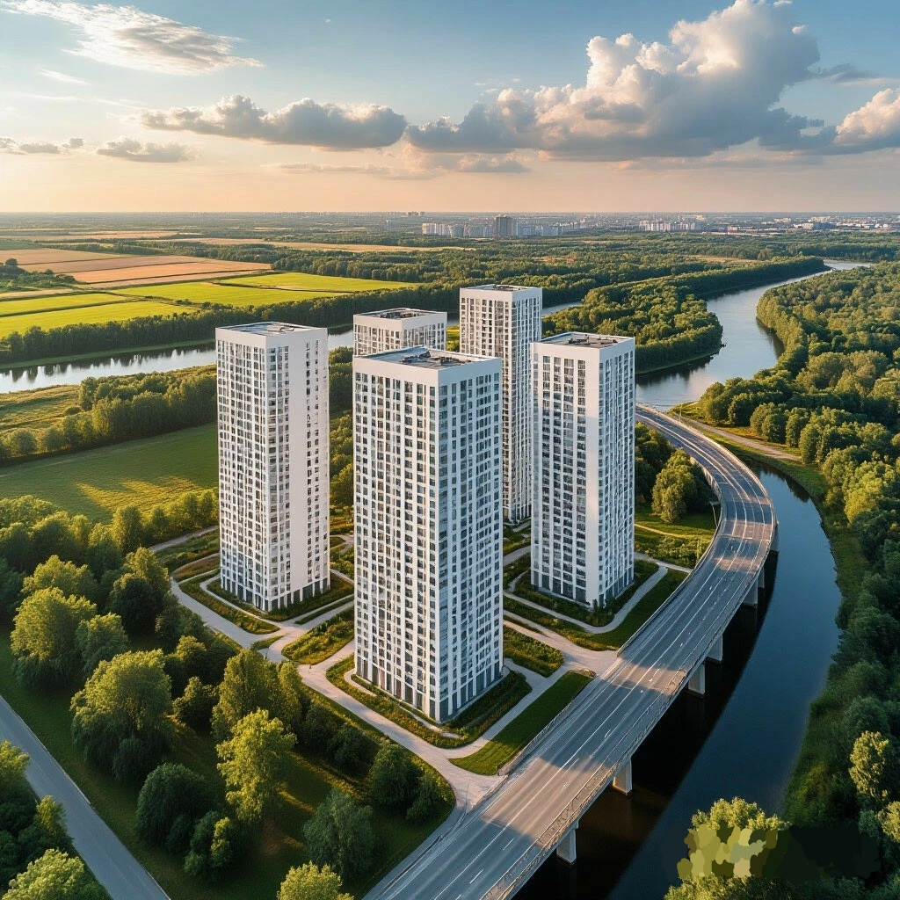
Жилой комплекс «Мираж»
Концептуальная экологическая архитектура, 2026.
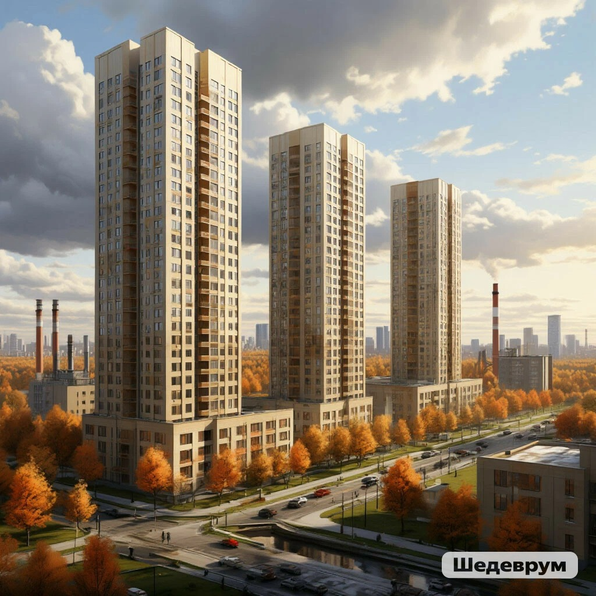
Минималистичная вилла в лесу
Интеграция бетона и стекла в ландшафт.
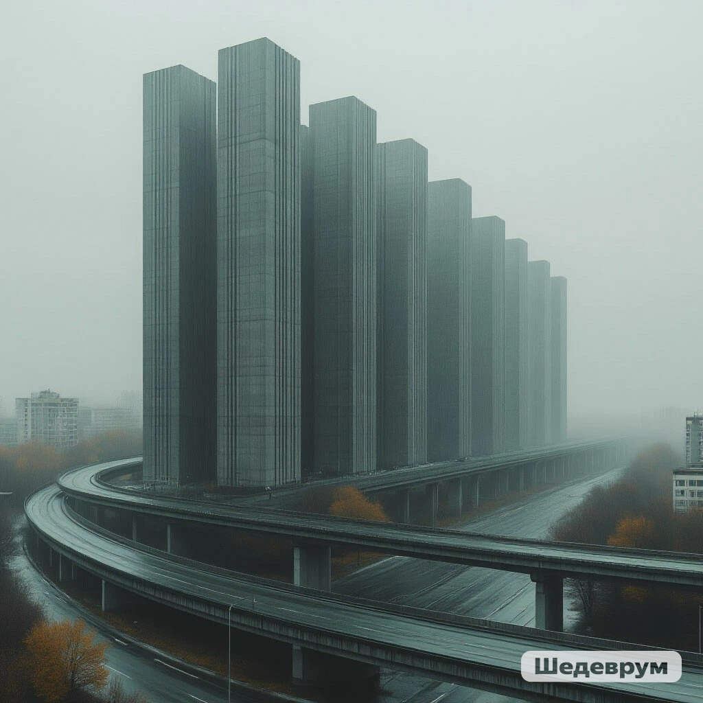
Брутал Сити Москва №3
Бывало ли у вас такое ощущение, что вам в жизни не хватает мощи и брутальности? Зачем вам бесполезные парки и гипсофобные виды из окна, если можно инвестировать в чистую, бескомпромиссную площадь из серого бетона? Мы убрали всё лишнее — благоустройство, детские площадки и солнечный свет — чтобы втиснуть рекордные 5 000 000 квартир прямо в эпицентр многоуровневой автомобильной развязки. Живя здесь, вы будете находиться в идеальной транспортной доступности, серая дымка за окном избавит от необходимости покупать шторы. Шубишка не продает уют, мы продаем квадратные метры — покупайте сейчас, пока мы не построили вторую очередь вплотную!
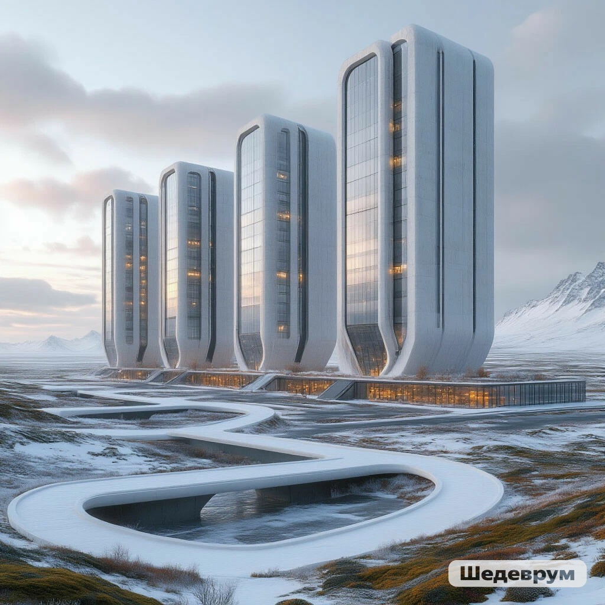
ЖК "Полярная звезда"
Устали от городской суеты, душного лета и заоблачных цен на недвижимость? Мы предлагаем дешёвую жилплощадь в самом экологически чистом районе планеты — высокоширотной Арктике, где вас встретит абсолютная тишина. Забудьте о кондиционерах и жаре: здесь всегда освежающе прохладно, а вместо раздражающего утреннего солнца вас ждет роскошная шестимесячная полярная ночь. Приятный бонус прямо у порога — очаровательные и пушистые белые медведи, которых при должной смелости можно даже погладить. ЖК расположен на острове Ушакова, рядом есть замечательный пляж и замечательный вид на море. Прямо на пляже вам бесплатно раздают коктейли со льдом.
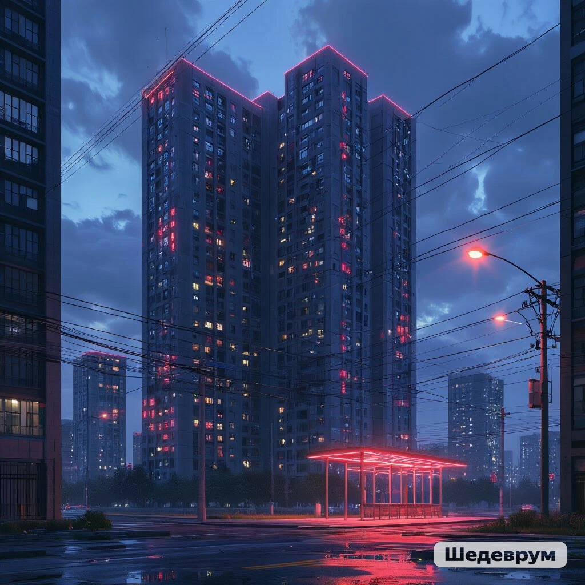
ЖК Синий кирпич, Новочебоксарск
Забудьте о шторах: ядовито-красный фасадный неон обеспечит вам бесплатную клубную хромотерапию прямо в спальне 24/7. Запутанная паутина высоковольтных проводов прямо за окном подарит району неповторимый индустриальный шарм, а плотная застройка избавит от навязчивого солнечного света и одиночества — ведь вы сможете заглянуть в телефон соседа напротив. Мы полностью очистили двор от бесполезных деревьев ради эстетичного мокрого асфальта, а тончайшие стены позволят вам наслаждаться плейлистом соседей, не выходя из своей уютной квартиры.
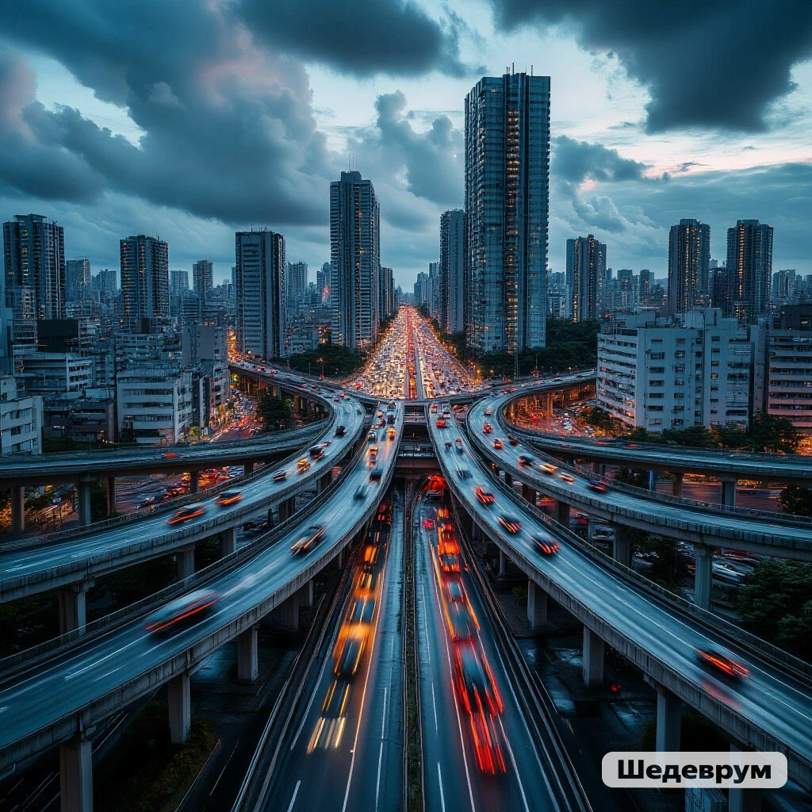
ЖК American Sity
Зачем тратить время на дорогу до магистрали, если восемь полос скоростного шоссе могут быть прямо в вашем доме? Наш уникальный комплекс интегрирован непосредственно в гигантскую многоуровневую развязку, гарантируя жильцам транспортную автомобильную доступность тридцатиполосных магистралей по всему городу. Мы полностью ликвидировали пешеходные зоны и дворы — для обеспеченя лучшей среды для автомобилиста вместо них мы построили премиальные гаражи и 50-этажную парковку. Наши жители никогда не испытывают трудностей со способом добраться до школы или работы. Этот ЖК - прямой потомок американских субурбий и развязок!
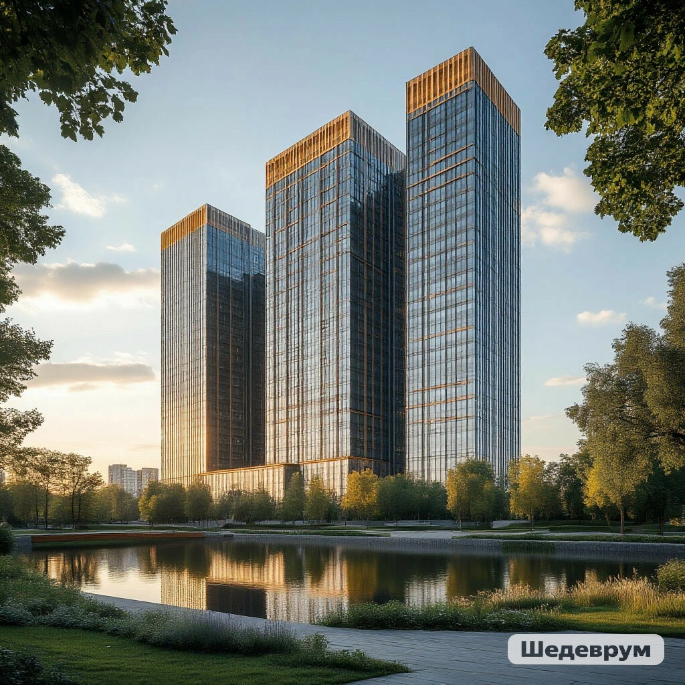
ЖК "Атлантида Премиум" - Новокузнецк
Мечтали о жилье у воды? Мы пошли дальше и построили башни прямо в динамично расширяющемся водоеме, искусно используя карстовые пустоты, размыв грунтов и наши фирменные непродуманные коммуникации. Каждое утро вас ждет незабываемый аттракцион: нижние этажи плавно и грациозно погружаются в пучину, превращая обычные подземные паркинги в эксклюзивные дайвинг-центры, а жильцов третьих этажей — в счастливых обладателей элитных сивью-апартаментов. Спешите купить квартиру на верхних уровнях, пока они не стали первыми, ведь «Атлантида» — это недвижимость, которая становится частью гидросферы Земли
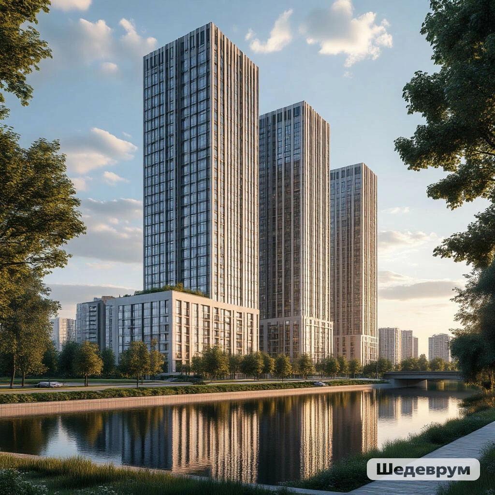
ЖК "Imperial-Capital group", Москва
Зачем переплачивать за огромные пустые пространства, если можно стать обладателем элитной недвижимости в самом сердце Москвы всего за цену хорошего автомобиля за один крошечный сантиметр? Зато прямо у вашего порога бьет ключом столичная жизнь, а станция метро расположена настолько близко, что вы всегда можете определить, что приближается поезд по дрожжанию мебели, и успеть на него!. Спешите приобрести свой личный кусочек бетонного пола в центре цивилизации — ведь премиальную цену всего 4 миллиона рублей за квадратный сантиметр вы платите не за площадь не за площадь, а за статус, который можно измерить школьной линейкой!
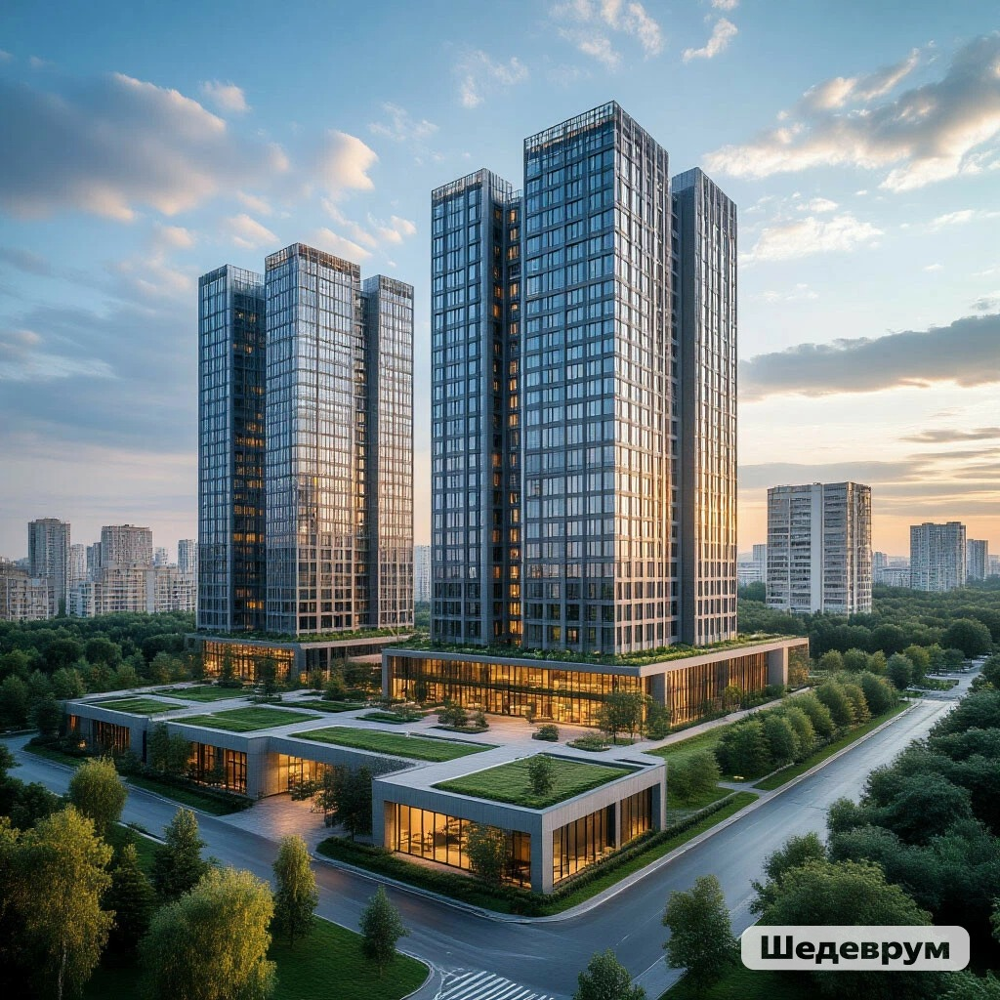
"СЭЗ Liberty" (Свободная экономическая зона)
Забудьте о скучном и жестком контроле со стороны управляющих компаний. Наш комплекс предлагает абсолютную свободу заселения — здесь рады абсолютно всем. Каждая квартира — это суверенное государство, где нижние этажи искусно превращены в склады контрафакта, около некоторых - странные звуки треска (наверное кто-то оставил счётчик Гейгера). В некоторых квартирах есть казино, клубы, русская рулетка. Каждая семья говорит на своём языке, тут и хинди, узбекский, таджикский, и даже китайский. Покупайте долю в ЖК «Интернациональный Экспресс»: ведь только здесь вы сможете купить шаурму просто выйдя на лестничную клетку, получить смертельную дозу радиации за секунду, быть заколоты заточкой в лифте или купить вещества!
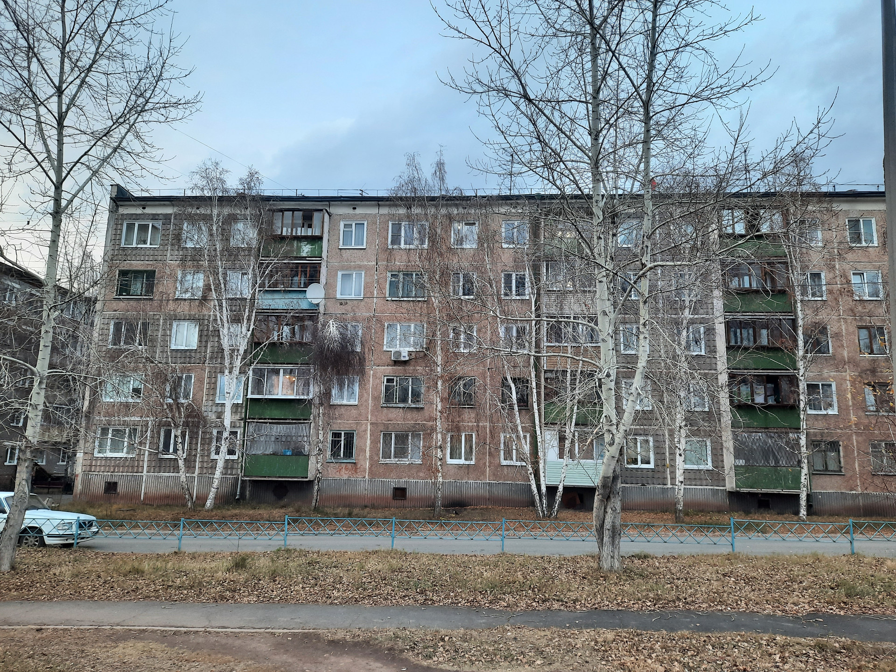
ЖК "Микрорайон 67" г. Братск
С первого взгляда этот ЖК кажется совсем незаметным. Однако вы очень сильно ошибаетесь. Это один из новейших ЖК бизнес-класса, стилизованный под обычную хрущёвку, чтобы лучше вписаться в городскую среду. Он идеален для тех, кто обманул инвесторов и хочет залечь на дно. Вся инфраструктура воссоздана в современном стиле Mid Century, есть магазин Шестёрочка, созданы стилизованные бабушки у подъезда. Мы создали всю необъодимую среду, даже пустили электробусы, стилизованные под маршрутки ресторан, стилизованный под столовую! При помощи нанотехнологий мы искуственно проржавили детскую площадку. Здесь есть всё, чтобы вы почувствовали себя уютно!
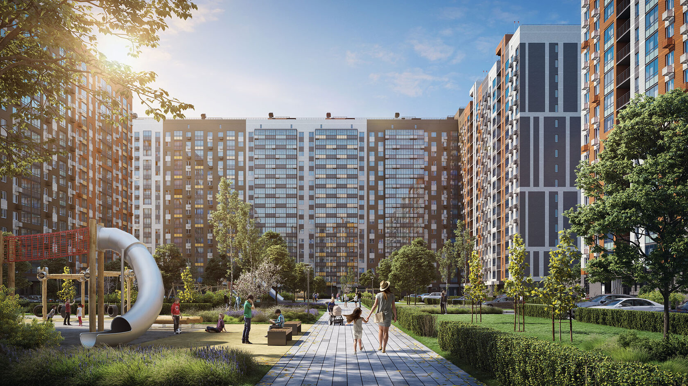
ЖК Разводилово
Этот ЖК для самых дальновидных людей, которые планируют всё до мелочей на 50 лет вперёд! И да, сроки сдачи этого ЖК переносятся вот уже 50 лет! У жильцов есть праздник: ровно 1 апреля каждого года срок сдачи переносится ровно на 1 год вперёд. И не зря это делается в день дурака! Здесь самая минималистичная отделка стен и система комуникаций - её просто нет. Рядом есть вода из лужи, которая иногда подогревается солнцем. Это наша забота об экологически чистой энергии!
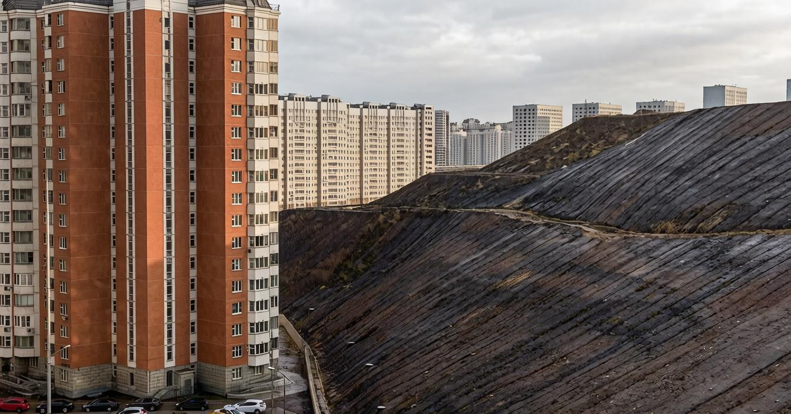
ЖК "Мусорок" - Москва
Да, вам не показалось, он действительно находится прямо в мусорном полигоне. Но ведь это же идеально: вам больше не надо ходить, выбрасывать мусор - вы можете просто выкинуть его из окна. Это гигиенично и чисто. ЖК передаёт несравнимый аромат, но не переживайте - возможно, на свалке лежит продукция парфюмерного завода, она перебьёт ненужный запах. А друзьям можно сказать, что вы купили дом с видом на золотые горы Алтая, и что Москва и туда разрослась. В принципе, если будет густой туман - отличить подделку будет невозможно!.
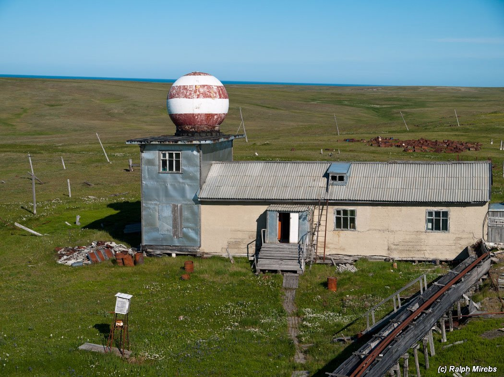
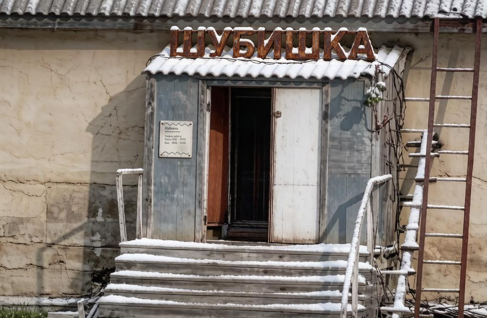
Архитектурное бюро «Шубишка»
Мы создаем концептуальные пространства, объединяющие строгую геометрию форм и функциональность. Каждая линия в наших проектах подчинена внутренней логике комфорта и эстетики минимализма.
Адрес бюро:
Хозяйственный корпус, посёлок Амдерма, Заполярный район, Ненецкий автономный округ, бывшая аэрологическая станция. Координаты: 69.762007 с. ш, 61.67106 в. д. Вход с улицы Полярная, на север от метеослужбы. Ориентир - Карское море.
Связаться с нами:
Email: adm-amderma@yandex.ru
Телефон: +7 (81857) 23-7-02
Телефон: +7 (81857) 23-7-02
ШУБИШКА